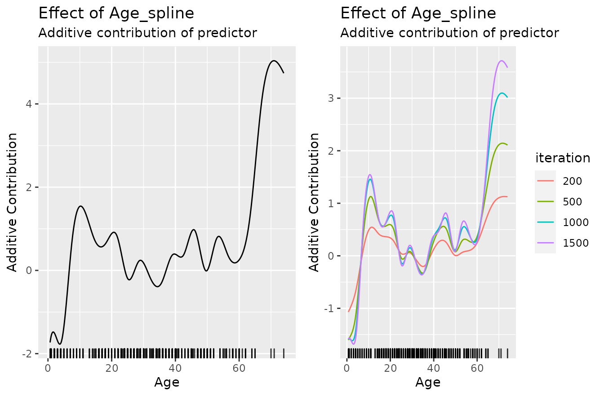
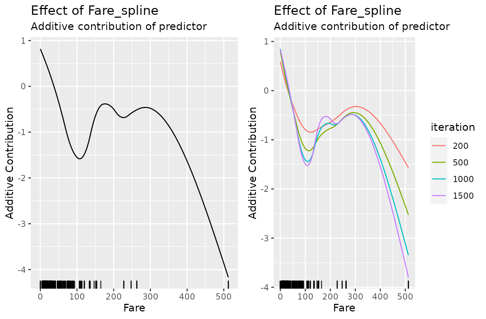

use_case.RmdWe use the titanic dataset with binary classification on survived. First of all, we store the train and test data into two data frames and remove all rows that contains missing values (NAs):
# Store train and test data:
df_train = na.omit(titanic::titanic_train)
str(df_train)
#> 'data.frame': 714 obs. of 12 variables:
#> $ PassengerId: int 1 2 3 4 5 7 8 9 10 11 ...
#> $ Survived : int 0 1 1 1 0 0 0 1 1 1 ...
#> $ Pclass : int 3 1 3 1 3 1 3 3 2 3 ...
#> $ Name : chr "Braund, Mr. Owen Harris" "Cumings, Mrs. John Bradley (Florence Briggs Thayer)" "Heikkinen, Miss. Laina" "Futrelle, Mrs. Jacques Heath (Lily May Peel)" ...
#> $ Sex : chr "male" "female" "female" "female" ...
#> $ Age : num 22 38 26 35 35 54 2 27 14 4 ...
#> $ SibSp : int 1 1 0 1 0 0 3 0 1 1 ...
#> $ Parch : int 0 0 0 0 0 0 1 2 0 1 ...
#> $ Ticket : chr "A/5 21171" "PC 17599" "STON/O2. 3101282" "113803" ...
#> $ Fare : num 7.25 71.28 7.92 53.1 8.05 ...
#> $ Cabin : chr "" "C85" "" "C123" ...
#> $ Embarked : chr "S" "C" "S" "S" ...
#> - attr(*, "na.action")= 'omit' Named int [1:177] 6 18 20 27 29 30 32 33 37 43 ...
#> ..- attr(*, "names")= chr [1:177] "6" "18" "20" "27" ...In the next step we transform the response to a factor having more intuitive levels:
Due to the R6 API it is necessary to create a new class object by calling the $new() constructor which gets the data, the target as character, and the used loss. Note that it is important to pass an initialized loss object which gives the opportunity to use, for example, a custom offset:
cboost = Compboost$new(data = df_train, target = "Survived",
loss = LossBinomial$new(), oob_fraction = 0.3)Adding new base-learners requires as first argument a character to indicate what feature we want to use for the new base-learner. As second argument it is important to define an identifier for the factory. This is necessary since it is possible to define multiple base-learners on the same source.
We can define a spline and a linear base-learner of the same feature:
# Spline base-learner of age:
cboost$addBaselearner("Age", "spline", BaselearnerPSpline)
# Linear base-learner of age (degree = 1 with intercept is default):
cboost$addBaselearner("Age", "linear", BaselearnerPolynomial)Additional arguments can be specified after the base-learner. For a complete list see the functionality at the project page:
# Spline base-learner of fare:
cboost$addBaselearner("Fare", "spline", BaselearnerPSpline, degree = 2,
n_knots = 14, penalty = 10, differences = 2)When adding categorical features, each group is added as single base-learner. Do also note that we don’t want an intercept here:
cboost$addBaselearner("Sex", "categorical", BaselearnerPolynomial,
intercept = FALSE)Finally, we can get all registered factories:
cboost$getBaselearnerNames()
#> [1] "Age_spline" "Age_linear" "Fare_spline"
#> [4] "Sex_female_categorical" "Sex_male_categorical"A logger is another class that is evaluated after each iteration to track the performance, elapsed runtime, or the iterations. For each Compboost object is by default one iterations logger defined with as many iterations as specified in the $train() function.
To be able to control the fitting behavior with logger, each logger can also be defined as stopper to stop the fitting process after a pre-defined stopping criteria.
This logger tracks the elapsed time. The time unit can be one of microseconds, seconds or minutes. The logger stops if max_time is reached. But we do not use that logger as stopper here:
cboost$addLogger(logger = LoggerTime, use_as_stopper = FALSE, logger_id = "time",
max_time = 0, time_unit = "microseconds")
cboost$train(2000, trace = 100)
#> 1/2000 risk = 0.73 oob_risk = 0.73 time = 0
#> 100/2000 risk = 0.66 oob_risk = 0.66 time = 14221
#> 200/2000 risk = 0.64 oob_risk = 0.64 time = 29367
#> 300/2000 risk = 0.62 oob_risk = 0.63 time = 44788
#> 400/2000 risk = 0.62 oob_risk = 0.63 time = 60776
#> 500/2000 risk = 0.61 oob_risk = 0.63 time = 77189
#> 600/2000 risk = 0.61 oob_risk = 0.63 time = 94338
#> 700/2000 risk = 0.61 oob_risk = 0.62 time = 111718
#> 800/2000 risk = 0.61 oob_risk = 0.62 time = 129521
#> 900/2000 risk = 0.61 oob_risk = 0.62 time = 147811
#> 1000/2000 risk = 0.61 oob_risk = 0.62 time = 168096
#> 1100/2000 risk = 0.61 oob_risk = 0.62 time = 187106
#> 1200/2000 risk = 0.6 oob_risk = 0.62 time = 207724
#> 1300/2000 risk = 0.6 oob_risk = 0.62 time = 227431
#> 1400/2000 risk = 0.6 oob_risk = 0.62 time = 247489
#> 1500/2000 risk = 0.6 oob_risk = 0.62 time = 268042
#> 1600/2000 risk = 0.6 oob_risk = 0.62 time = 288961
#> 1700/2000 risk = 0.6 oob_risk = 0.62 time = 310243
#> 1800/2000 risk = 0.6 oob_risk = 0.62 time = 331781
#> 1900/2000 risk = 0.6 oob_risk = 0.62 time = 355006
#> 2000/2000 risk = 0.6 oob_risk = 0.62 time = 377719
#>
#>
#> Train 2000 iterations in 0 Seconds.
#> Final risk based on the train set: 0.6
cboost
#> Component-Wise Gradient Boosting
#>
#> Trained on df_train with target Survived
#> Number of base-learners: 5
#> Learning rate: 0.05
#> Iterations: 2000
#> Offset: 0.1861
#>
#> LossBinomial Loss:
#>
#> Loss function: L(y,x) = log(1 + exp(-2yf(x))
#>
#> Objects of the Compboost class do have member functions such as $getEstimatedCoef(), $getInbagRisk() or $predict() to access the results:
str(cboost$getEstimatedCoef())
#> List of 5
#> $ Age_spline : num [1:24, 1] -4.138 -0.764 -2.536 1.246 1.86 ...
#> $ Fare_spline : num [1:17, 1] 1.166 0.484 -0.349 -1.445 -1.641 ...
#> $ Sex_female_categorical: num [1, 1] -1.51
#> $ Sex_male_categorical : num [1, 1] 0.681
#> $ offset : num 0.186
str(cboost$getInbagRisk())
#> num [1:2001] 0.735 0.735 0.735 0.733 0.733 ...
str(cboost$predict())
#> num [1:500, 1] -0.845 -2.11 1.171 1.195 -0.762 ...To obtain a vector of the selected base-learners just call $getSelectedBaselearner()
table(cboost$getSelectedBaselearner())
#>
#> Age_spline Fare_spline Sex_female_categorical
#> 1156 492 278
#> Sex_male_categorical
#> 74We can also access the predictions directly from the response object cboost$response and cboost$response_oob. Note that $response_oob was created automatically when defining an oob_fraction within the constructor:
oob_label = cboost$response_oob$getResponse()
oob_pred = cboost$response_oob$getPredictionResponse()
table(true_label = oob_label, predicted = oob_pred)
#> predicted
#> true_label -1 1
#> -1 60 26
#> 1 22 106To set the whole model to another iteration one can again call $train(). The model is then set to an already seen iteration, if the new iteration is smaller than the already trained once or it trains additional base-learner until the new number is reached:
cboost$train(3000)
#>
#> You have already trained 2000 iterations.
#> Train 1000 additional iterations.
#>
#> 2025/3000 risk = 0.6 oob_risk = 0.62 time = 383565
#> 2100/3000 risk = 0.6 oob_risk = 0.62 time = 400792
#> 2175/3000 risk = 0.6 oob_risk = 0.62 time = 418235
#> 2250/3000 risk = 0.6 oob_risk = 0.62 time = 436754
#> 2325/3000 risk = 0.6 oob_risk = 0.62 time = 454523
#> 2400/3000 risk = 0.6 oob_risk = 0.62 time = 472664
#> 2475/3000 risk = 0.6 oob_risk = 0.62 time = 491741
#> 2550/3000 risk = 0.6 oob_risk = 0.62 time = 510149
#> 2625/3000 risk = 0.6 oob_risk = 0.62 time = 528716
#> 2700/3000 risk = 0.6 oob_risk = 0.62 time = 547658
#> 2775/3000 risk = 0.6 oob_risk = 0.62 time = 566612
#> 2850/3000 risk = 0.6 oob_risk = 0.62 time = 585846
#> 2925/3000 risk = 0.6 oob_risk = 0.62 time = 605350
#> 3000/3000 risk = 0.6 oob_risk = 0.62 time = 624893
str(cboost$getEstimatedCoef())
#> List of 5
#> $ Age_spline : num [1:24, 1] -6.978 -0.123 -2.918 1.455 1.724 ...
#> $ Fare_spline : num [1:17, 1] 1.139 0.495 -0.344 -1.465 -1.671 ...
#> $ Sex_female_categorical: num [1, 1] -1.52
#> $ Sex_male_categorical : num [1, 1] 0.681
#> $ offset : num 0.186
str(cboost$getInbagRisk())
#> num [1:3001] 0.735 0.735 0.735 0.733 0.733 ...
table(cboost$getSelectedBaselearner())
#>
#> Age_spline Fare_spline Sex_female_categorical
#> 2055 578 293
#> Sex_male_categorical
#> 74To visualize a base-learner it is important to exactly use a name from $getBaselearnerNames():
gg1 = cboost$plot("Age_spline")
gg2 = cboost$plot("Age_spline", iters = c(50, 100, 500, 1000, 1500))
gg1 = cboost$plot("Age_spline")
gg2 = cboost$plot("Age_spline", iters = c(50, 100, 500, 1000, 1500))